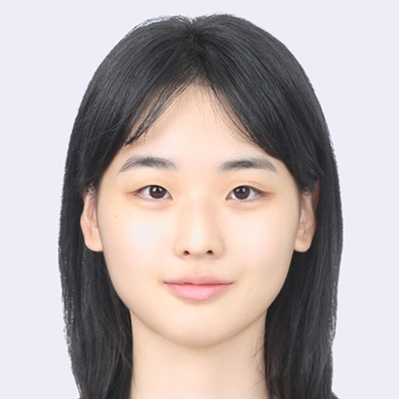

Giyoon Jang is an M.S. student in the School of Software at Soongsil University, where she is a member of the Natural Language Processing Lab under the supervision of Professor Chanjun Park. She received her B.S. in Computer Science from Hanyang University (ERICA), and spent a year as an exchange student at the University of California, San Diego. Before starting her graduate studies she worked on generative AI image research at Lotte Innovate and on IT service operations at Einsis INC. Her research interests center on large language models, with a focus on evaluation and benchmarking, trustworthy AI, and the safe deployment of generative models in practice. For more details, please see her CV.
Domestic Patent Applications